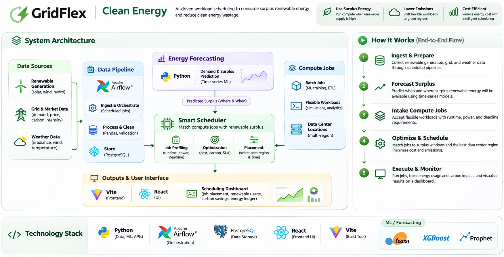

Project 01 · Oct 2026 – Present
Clean Energy
Moves flexible data-center jobs to the hours and places where the US grid has spare solar and wind. We don't create clean energy, we stop wasting it.
Architecture

Click the image to open it full size.
How it works
The problem
Grids curtail (throw away) solar and wind power when supply beats demand. Data-center work that can wait could use it instead. Energy does not move, but work can.
Live data pipeline
Airflow DAGs pull hourly EIA data for 8 US grids into Postgres (Docker), with a 2-year backfill. Fuel-mix data arrives about 20 hours late, so recent hours are nowcast and clearly labeled as estimates.
Forecasting
XGBoost models give P10/P50/P90 forecasts of solar, wind and demand per grid, using weather weighted by real plant locations. On PJM, ERCOT and MISO they cut error by about 50–60% versus a same-hour baseline.
Scheduler & ledger
A 48-hour rolling plan places jobs on surplus hours; leftover surplus pre-chills cooling or runs filler work, and a ledger accounts for every MWh. Currently tested on simulated surplus.
AI job chat
Describe a job in plain words and a LangGraph agent (Llama 3.1 8B) returns a min/typical/max energy estimate and where it could run. Numbers always come from code, never the LLM, with guardrails against prompt injection.
Map
A 3D globe with real day/night and a flat US map of 10 data-center hubs, colored by how much surplus each can absorb.